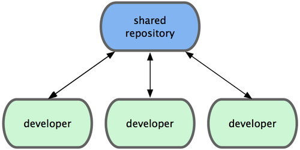
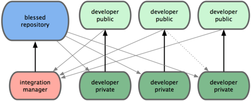

git从入门到删库
前略
思想
直接记录快照，而非差异比较

存储每个文件与初始版本的差异

存储项目随时间改变的快照
近乎所有操作都是本地执行
- 本地提交
- 本地提取
- 本地对比
Git 保证完整性
Git 中所有数据在存储前都计算校验和，然后以校验和来引用。 这意味着不可能在 Git 不知情时更改任何文件内容或目录内容。
SHA-1
Git 一般只添加数据
你执行的 Git 操作，几乎只往 Git 数据库中增加数据。 很难让 Git 执行任何不可逆操作，或者让它以任何方式清除数据。
三种状态
- 已提交（committed）
- 已修改（modified）
- 已暂存（staged）

暂存区
Git和其他版本控制系统如SVN的一个不同之处就是有暂存区的概念。
- 工作区
- 暂存区
- 历史记录
工作区

暂存区

版本库
untracked
没有被git add过的文件，都会处于untracked状态，修改不会被提交，并且可以被忽略工作流

分支
为了理解 Git 分支的实现方式，我们需要回顾一下 Git 是如何储存数据的。
git add README test.rb LICENSE
git commit -m 'initial commit of my project'

commit复commit

那么说好的分支呢

分支其实就是从某个提交对象往回看的历史
新建分支
git branch testing这会在当前 commit 对象上新建一个分支指针

HEAD

不同于svn
git中的HEAD指针指向的是分支
而不是commit
远程分支
远程分支是对远程仓库中的分支的索引。它们是一些无法移动的本地分支；只有在 Git 进行网络交互时才会更新。 远程分支就像是书签，提醒着你上次连接远程仓库时上面各分支的位置。
clone

fetch

分布式git
git工作流
集中式工作流
集成管理员工作流
司令官与副官工作流
DLC
- https://try.github.io
- https://git-scm.com/book/zh/v2